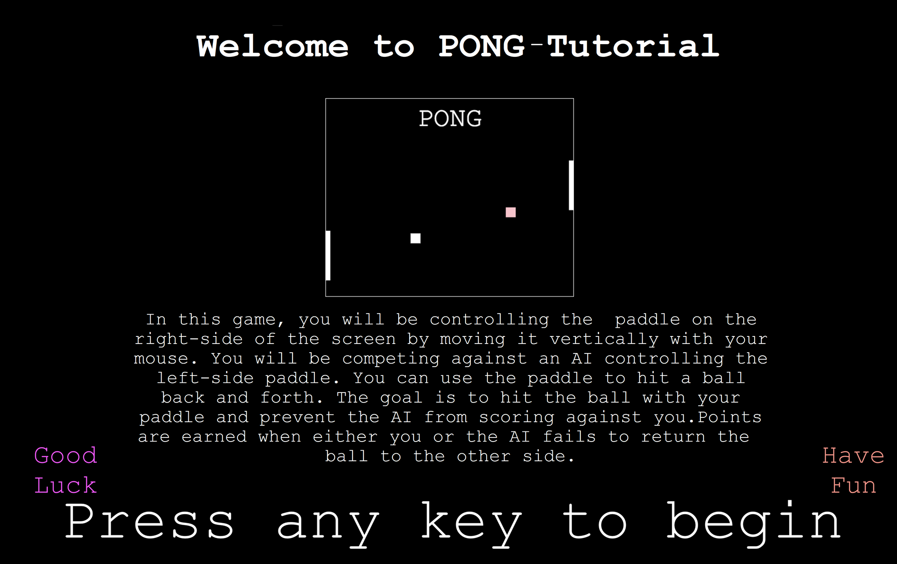

<!DOCTYPE html>
<html>
<head>
  <title>PONG</title>
  <script src="jspsych-6.0.3/jspsych.js"></script>
  <script src="jspsych-6.0.3/plugins/jspsych-survey-text.js"></script>
  <script src="jspsych-6.0.3/plugins/jspsych-html-keyboard-response.js"></script>
  <script src="jspsych-6.0.3/plugins/jspsych-html-slider-response.js"></script>
  <script src="jspsych-6.0.3/plugins/jspsych-html-button-response.js"></script>
  <script src="pong.js"></script>

  <link href="jspsych-6.0.3/css/jspsych.css" rel="stylesheet" type="text/css"></link>
  <style>
  html, body { background-color: black; }
  </style>
</head>

<body>

</body>
<script>


var timeStarted = new Date().valueOf()
var gameDuration = 15*60*1000
var gameWidth = 960, gameHeight = 600
var numTrials = 0
var maxTrials = 3
var timeline = []
var colorBlindSafeColorPairs = [['white', 'grey'], ['white', 'red'], ['white', 'green'], ['white', 'blue'], ['white', 'pink'], ['grey', 'white'], ['grey', 'red'], ['grey', 'blue'], ['red', 'white'], ['red', 'blue'], ['green', 'white'], ['green', 'blue'], ['blue', 'white'], ['blue', 'white'], ['blue', 'red'], ['blue', 'pink'], ['blue', 'grey'], ['chartreuse', 'grey'], ['chartreuse', 'yellow'], ['chartreuse', 'white'], ['chartreuse', 'blue'], ['chartreuse', 'grey'], ['magenta', 'white'], ['magenta', 'grey'], ['magenta', 'yellow'], ['magenta', 'red'], ['cyan', 'grey'], ['cyan', 'white'], ['white', 'cyan'], ['grey', 'cyan'], ['grey', 'chartreuse'], ['yellow', 'chartreuse'], ['white', 'chartreuse'], ['blue', 'chartreuse'], ['white', 'magenta'], ['grey', 'magenta'], ['yellow', 'magenta'], ['red', 'magenta']]
var paddleSizes = [0.5, 1.2, 1.9]
var ballSpeeds = [13, 15, 17]
//these have similar levels of contrast as each other, to a black background. Because of this, they don't appear to be moving different speeds.
var goodColors = [['#3077FF', 'mediumorchid'], ['mediumorchid', '#3077FF'], ['#00AAAA', '#BB00BB'], ['#AA00AA', '#00AAAA'], ['#a1a69f', '#1eabf6'], ['#1eabf6', '#a1a69f']]

function getRandomColorPair(){
  return goodColors[Math.floor(Math.random()*goodColors.length)]
}

var welcome = {
  type:"html-keyboard-response",
  stimulus:"</img>'<br />",
  on_finish: function(){//gameMusic.load()
  /*gameMusic.play()*/}
}

var genericLevel = {
  type:"pong",
  stimulus:"<p>test</p>",
  ballSpeed: ballSpeeds[Math.floor(Math.random()*ballSpeeds.length)],
  ballColors: getRandomColorPair(),
  humanPaddleSize:paddleSizes[Math.floor(Math.random()*paddleSizes.length)],
  aiPaddleSize:1,
  gameWidth:500,
  gameHeight:400,
  randomBackgroundBallMotion: false,
  keyboardControl: false,
  mouseControl: true

}

var firstLevel = {
  type:"pong",
  stimulus:"<p>test</p>",
  ballSpeed: ballSpeeds[0],
  ballColors: getRandomColorPair(),
  humanPaddleSize:paddleSizes[1],//paddleSizes[Math.floor(Math.random()*paddleSizes.length)],
  aiPaddleSize:1,
  gameWidth:500,
  gameHeight:400,
  randomBackgroundBallMotion: false,
  keyboardControl: false,
  mouseControl: true,
  tutorial: true

}
var postPracticeQuestion = {
   type:"html-keyboard-response",
   stimulus: "<p style='color:white'>Practice session over. Press any key for the first level</p>"

 }

/*
var response = {
  type: 'html-button-response',
  stimulus: '',
  choices: ['Background', 'Target', 'Neither'],
  prompt: "<p style='color:white'>Which ball was faster?</p>"
}
*/

var lengthResponse = {
  type: 'html-button-response',
  stimulus: '',
  choices: ['10', '15', '20'],
  prompt: "<p style='color:white'>How long did this trial feel? (in seconds)</p>"
}

var fluffQ = {
  type: 'html-button-response',
  stimulus: '',
  choices: ['Easy', 'Medium', 'Difficult'],
  prompt: "<p style='color:white'>How hard was the trial?</p>"
}

var performanceQ = {
    type: 'html-slider-response',
    stimulus: '<p style="color:white"></p>',
    labels: ['<p style="color:white">One of my best runs</p>', '<p style="color:white">One of my worst</p>'],
    prompt: "<p style='color:white'>How well do you think you did?</p>"
}

var hypothesisGuess = {
  type: 'survey-text',
  questions: [{prompt: "<p style='color:white'>What do you think this experiment is about? What's your best guess of the hypothesis?</p>", rows: 5, columns: 40}],
}

var thankerScreen = {
  type: 'html-keyboard-response',
  stimulus: "<p style='color:white'>Thank you for playing! Please return to Prolific now to finish the study: </p>"
}
var loop = {timeline: [genericLevel, lengthResponse, fluffQ, performanceQ],
            repetitions: maxTrials
          }

timeline.push(welcome)
timeline.push(firstLevel)
timeline.push(postPracticeQuestion)
timeline.push(loop)
timeline.push(hypothesisGuess)
timeline.push(thankerScreen)

/*timeline.push(level)
timeline.push(response)
timeline.push(lengthResponse)
timeline.push(favoriteBall)
timeline.push(performanceQ)*/


jsPsych.init({
  timeline: timeline,
  on_finish: function(){
    jsPsych.data.displayData();
  }
})

</script>
</html>
